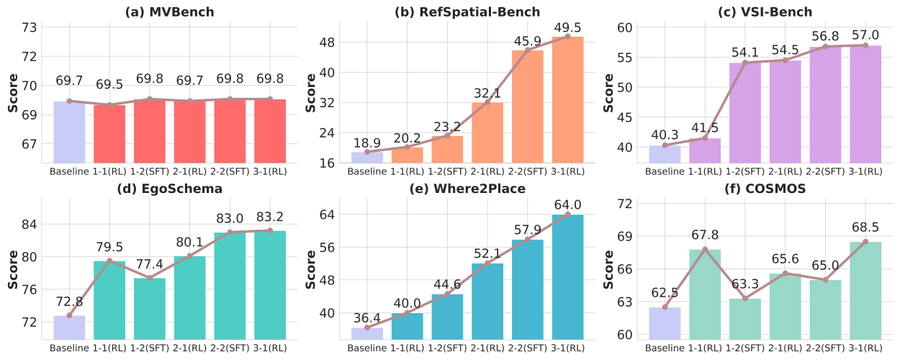

This report presents Pelican-VL 1.0, a new family of open-source embodied brain models with parameter scales ranging from 7 billion to 72 billion. Our explicit mission is clearly stated as: To embed powerful intelligence into various embodiments. Pelican-VL 1.0 is currently the largest-scale open-source embodied multimodal brain model. Its core advantage lies in the in-depth integration of data power and intelligent adaptive learning mechanisms. Specifically, metaloop distilled a high-quality dataset from a raw dataset containing 4+ billion tokens. Pelican-VL 1.0 is trained on a large-scale cluster of 1000+ A800 GPUs, consuming over 50k+ A800 GPU-hours per checkpoint. This translates to a 20.3% performance uplift from its base model and outperforms 100B-level open-source counterparts by 10.6%, placing it on par with leading proprietary systems on well-known embodied benchmarks.
Pelican-VL 1.0 achieves strong benchmark performance, showing clear gains over ≤100B models and achieving SOTA results even against >100B models. Across our nine-dimension embodied-intelligence taxonomy, Pelican-VL 1.0 attains a well-balanced skill distribution and excels in key dimensions.
Comparison against models with >100B parameters
Comparison against models with ≤100B parameters
Pelican-VL 1.0 vs models >100B
Pelican-VL 1.0 vs models ≤100B
Overall performance comparison on benchmarks. Bold and underlined numbers indicate the best and second-best results, respectively. A dagger (✝) marks results differing from official reports or unusually low, possibly as official evaluations used model-specific prompts and the models are prompt-sensitive, while our results are obtained under a unified protocol for fair comparison. An asterisk (*) denotes results reported from official sources. Yellow cells mark Pelican-VL 1.0.
The performance curves show that DPPO preserves general capabilities without catastrophic forgetting while progressively enhancing embodied intelligence. Pelican-VL steadily improves across both general and embodied benchmarks through alternating RL-driven weakness discovery and SFT-based consolidation.
Pelican-VL 1.0 can generate consistent affordances for multi-view inputs, so that 2D affordances can be triangulated into 3D target points as direct robot action commands.


(a) Raw multi-view inputs


(b) Visual grounding

(c) 2D-to-3D affordance triangulation


(d.1) Pick


(d.2) Move


(d.3) Place
Pelican-VL-1.0 generates accurate multi-view visual grounding and affordance-based task de-compositions. Grasp points are highlighted in green,avoidance regions in yellow, and placement targets in pink.

Put the ed apple into the blue plate

Put the snack package into the blue plate

Put the orange into the bamboo basket

Put the red apple into the bamboo basket
Pelican-VL 1.0 interprets a natural-language instruction and autonomously performs sequential actions—placing shoes on the rack, disposing garbage into the trash can, and loading clothes into the washing machine.
.png)
.png)
.png)
"Please put the shoes on the shoe rack, throw the garbage on the table into the trash can, and put the dirty clothes on the sofa into the washing machine."
.png)
Move to shoe rack
.png)
Grab the shoes
.png)
Place on the shoe rack
.png)
Task 1 completed
.png)
Go to the table
.png)
Grab the milk carton
.png)
Throw into trash can
.png)
Task 2 completed
.png)
Grab the dirty clothes
.png)
put them into washer
.png)
Close the door
.png)
Task 3 completed
The initial force prior provided by Pelican-VL 1.0 accelerates the convergence of the online adaptive controller.

Sponge wipe

Blue balloon

Chips

Soft labobo
If you use any source codes or the datasets included in this toolkit in your work, please cite the following paper. The bibtex are listed below: